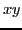
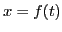
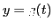
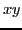
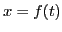
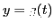
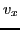
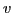

Next: Acceleration. Rectilinear motion. Up: Simple applications of the Previous: Applications of the derivative Contents Index
The coordinates  and
and  of a point P moving in the -plane are
also functions of the time, and the motion may be defined by means of
two equations6.10,
, .
These are the parametric equations of the path (see §6.5).
of a point P moving in the -plane are
also functions of the time, and the motion may be defined by means of
two equations6.10,
, .
These are the parametric equations of the path (see §6.5).
The horizontal component6.11 of  is the velocity along the  -axis of
the projection M of P, and is therefore the time rate of change of
-axis of
the projection M of P, and is therefore the time rate of change of  .
Hence, from (6.21), when
.
Hence, from (6.21), when  is replaced by
is replaced by  , we get
, we get
If  be the angle which the direction of the velocity makes
with the
be the angle which the direction of the velocity makes
with the  -axis; we have from the figure, using (6.21),
(6.24), (6.25),
-axis; we have from the figure, using (6.21),
(6.24), (6.25),
david joyner 2008-08-11